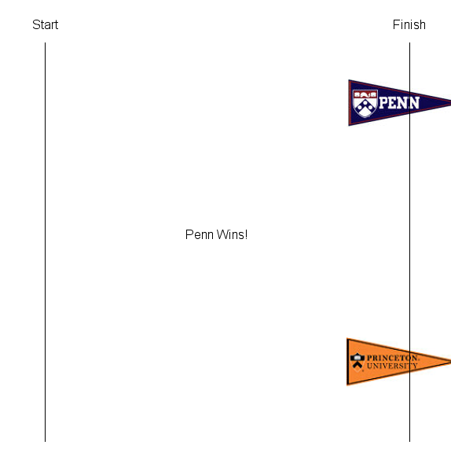

The general goal of the Canvas Creations assignment is to write two Java programs which make use of loops, and conditionals. The specific goals are to:
PennDraw
Math.random() to simulate random behaviorThis assignment is split in two parts. In the first part, you will write a simple animation; in the second, you will write a program that responds to the user’s clicks on a canvas.
PennDraw.hasNextKeyTyped() and PennDraw.nextKeyTyped().You will write a program Rivalry.java that visualizes a race between two contestants. Do not set up the program yet. Read through all of this portion of the assignment first so you have an understanding of the big picture before you start setting up. Once you read the following description, you can use the skeleton code provided below to start coding the program.
As you are well aware, Princeton is one of Penn’s main rivals. So for the example race, we used an image of the Penn pennant and an image of the Princeton pennant as the two racing rivals. In your program, you will choose two images that represent your own favorite pair of rivals. For example, you may want to use images of Nicki Minaj and Cardi B or Apple Music and Spotify. Once you choose your images, download them as png files and upload them to Codio (File -> Upload).
Here is an example of what the race will look like. Since the movement of the pennants is randomly controlled, the final state of the pennants in the image below is just an example; the result will be different each time the program is run.

On Codio, open the Rivalry and ClickArt assignment. You should see the two files you will write for this assignment, Rivalry.java and ClickArt.java, as well as the readme for the assignment, which you will complete at the end.
The skeleton code for Rivalry.java has the word TODO in places where we want you to fill things in. Once you complete the TODOs, you should delete these comments and add your own comments to describe the functionality of your code. You will see the use of enableAnimation(), disableAnimation(), and advance() in the skeleton code. Read the animation section of the PennDraw wiki for an explanation of these functions to understand why we use them.
Use the specifications from below, along with the skeleton code, to create the race between your rivals. Always write code in small steps. Compile and test after each step. Do not move on to another task in the program until you are sure your current code is working.
Your program must follow the specifications below:
PennDraw.setCanvasSize(), PennDraw.setXScale(), PennDraw.setYScale(), or PennDraw.setScale().PennDraw.picture(xcenter, ycenter, filename, width, height) function. Changing the values of width and height will alter the dimensions with which the image appears on the canvas. It will not alter the actual size of the image saved on your computer.
PennDraw.picture(x, y, filename) (if you do not need to change the size of your image) or PennDraw.picture(xcenter, ycenter, filename, width, height) (if you need to draw the image at a size different than its native state). You will replace x and y, with the desired x and y coordinates of the center of the image. The filename will be replaced with the exact name of the image file as it appears in your homework folder.break keyword to exit the loop.Write a program ClickArt.java, with the following specifications. Read all of this section beginning the coding process.
Your program must follow the specifications below:
PennDraw.setCanvasSize().for or while loops). For example, you might draw a nighttime sky filled with randomly colored and sized stars, a green field with randomly placed and sized blades of grass, or a tessellated background with random colors. (You will again find Math.random() helpful). You can have the random background in either the top, bottom, or both. However, if you generated a random element in both the top and bottom, these two elements need to be different.for or while loops can be as simple or as complex as you wish. Your program must simply use one or more loops to draw the background.PennDraw.hasNextKeyTyped() to see if the user has pressed a key, and PennDraw.nextKeyTyped() to retrieve that actual character typed. You do not need to use this character, but you still must call nextKeyTyped() for the code to work correctly. PennDraw.hasNextKeyTyped() will be true after a key has been pressed until PennDraw.nextKeyTyped() is called. Make sure you understand the difference between these two functions and why we must use both of them to utilize keypresses.PennDraw (e.g. PennDraw.RED); take a look at this color picker courtesy of Google and visit the PennDraw wiki to see how to change the pen color to an RGB value.To help you get started, ClickArt.java’s skeleton code is included in Codio. Again, the TODO annotations are where we expect you to fill in your code. Once you complete the TODOs, delete the TODO comments. The non-commented code can be used as is.
readme_rivalry.txt is included in Codio. Open it in Codio, and answer the questions.
Implement Rivalry.java by custom drawing your rivals with PennDraw functions instead of using picture files!
Your rival drawings must make use of at least five (not necessarily different) PennDraw function calls to be counted for credit.
Submit your homework under HW01 on Gradescope. You need to upload Rivalry.java, ClickArt.java, readme_rivalry.txt, and any and all images you used in either program.
All program file names should match the required names exactly, including capitalization. Make sure you submit the .java files, NOT the .class files, and, if they’re being generated, NOT the .java~ files. If you don’t see .java~ files being in your directory, don’t worry about this.
Again, you must submit all image files you used in your programs exactly with the exact file names as they appear saved in your HW01 folder.